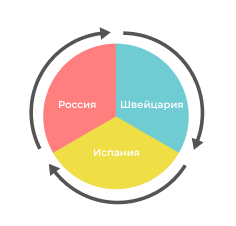

|
|
|
Swiss Finance Alliance
route de l'Aéroport 10
1215 Genève Switzerland
|
|
|
Дорогие друзья
В наше смутное время все больше людей осознают необходимость принятия верной бизнес
стратегии развития для компании.
Любая непредвиденная ситуация в экономике с основным расчетным счетом способна
выбить из колеи кого угодно.
В таких случаях открытие второго счета в иностранном банке — надежный запасной вариант.
Ни один бизнес не может полноценно существовать без дополнительного иностранного
счета, так как отсутствие данного инструмента буквально оголяет бизнес перед лицом
государства и обстоятельств непреодолимой силы.
У вас могут просто заморозить счет или списать деньги за неуплату налогов, в рамках
судебного разбирательства с кредитором, вы можете потерять на девальвации валюты,
при экономических и финансовых проблемах государства или форсмажорной ситуации в
виде вируса и т.п.
Бизнес базируется на принятии того, что ему понятно и выгодно.
По этому, как индивидуальный предприниматель, так и юридическое лицо вправе открыть
столько счетов, сколько посчитает нужным. Законодательно ограничения не установлены.
При современных возможностях доступности информации законных и выгодных стратегий
по минимизации налогов – незаконный уход от налога просто глупость. Вы должны
соблюдать налоговое законодательство своей страны, а также той страны, в которой
у вас открыт иностранный банковский счет.
|
|
Трастовые операции в Швейцарии и за ее пределами

|
|
Что дает нерезидентам счет в иностранном банке:
- использовать иностранные валюты, для выгодного и быстрого обмена, с минимальной потерей на комиссионных
- проще и дешевле осуществлять международные переводы
- возможность структурировать налоговую нагрузку
- получать доступ к международному банковскому рынку
- снижать валютные риски
- возможность открывать счет за границей в рублях
- дистанционное открытие
- пользоваться наличными денежными средствами независимо от нахождения
- увеличивать количество партнерской сети
- обеспечивать высокий уровень конфиденциальности
Cколько это стоит?
Обслуживание иностранного банковского счета бесплатно *
(но есть разовые расходы по оформлению, и годовые - по отчетности)
Цели, для которых вам нужен иностранный счет
Вне зависимости от конкретной цели иностранный счет расширяет ваши возможности по
её достижению. Нужно лишь понимать, какие задачи он поможет решить, а какие – нет.
ВАЖНО: В соответствии с изменениями, принятыми в августе 2019 года к закону
“О валютном контроле”, если вы откроете иностранный счет на частное лицо в
2020-м году, то заявить о его открытии нужно будет в течение 30 дней после
этого факта, но отчитываться о нем не обязательно в случае, если сумма
поступивших на него средств не превысит эквивалент 600 тыс руб по курсу ЦБ
на дни зачисления.
Поэтому, мы предлагаем вам открытие аккаунта в швейцарском или испанском банке,
которая дает вам юридическую защиту от чрезмерных действий со стороны правительства,
конкурентов, госструктур а также необоснованных блокировок и арестов счетов.
В рамках этой концепции, мы предлагаем использовать опыт и возможности компаний
Swiss Finance Alliance (CHE-329.000.979)
Женева, Швейцария и Alicante Suisse Real Estate sl
(CIF B54790936) Alicante Испания
|
|
Лучшее решение для размещения активов и управления инвестициями — корпоративный
торговый счет в швейцарском или испанском банке, и к тому же такой счет можно
открыть удаленно.
С нами это проще чем вы думаете
Заказать дополнительный счет
|
|
Почему мы?
-
Проверить регистрацию швейцарской компании Swiss Finance Alliance SCM,
(CHE-329.000.979) route de l'Aéroport 10 1215 Genève можно здесь:
https://www.uid.admin.ch/Detail.aspx?uid_id=CHE329000979
-
Свой собственный BIC / SWIFT: SFASCHG2
и расширенные возможности в работе с транснациональными клиентами.
Проверить SWIFT можно здесь:https://www2.swift.com/bsl/
-
Проверить регистрацию испанской компании Alicante Suisse Real Estate sl
(CIF B54790936) можно через прямой поиск по налоговому идентификатору «CIF B54790936»
|
|
|
|
Alicante Suisse Real Estate sl
C/ Callosa del Segura 10
03005 Alicante
Spain
|